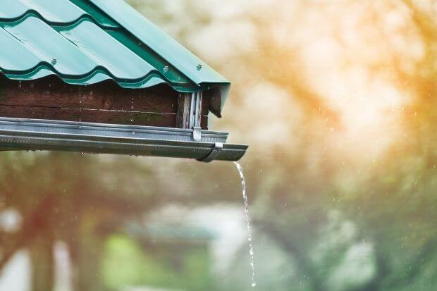
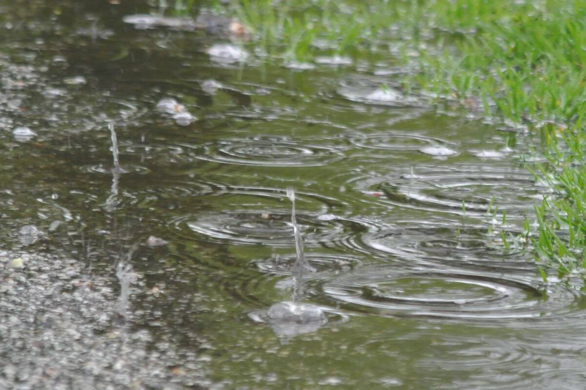

Aprovechemos el agua de lluvia
Una solución para la escasez de agua

Precipitacion anual promedio: 850 mm.
Captacion anual promedio por m²: 850 litros.
Familias que podrian beneficiarse: +3000.
Ahorro potencial por vivienda: Hata el 25% en consumo de agua.
Reduccion del impacto ambiental: 15% menos agua de desperdicio de agua pluvial
En Zinacantepec el agua es un recurso vital que cada dia se vuelve mas escaso.
Con la captacion de agua pluvial, transformamos cada gota de lluvia en una oportunidad en el futuro
El desafio del agua en nuestra localidad
En Zinacantepec, el acceso al agua potable es un reto creciente debido a la irregularidad de lluvias y el aumento del consumo. Muchas familias enfrentan dificultades para obtener agua limpia y segura, lo que afecta su calidad de vida. La captación de agua de lluvia se presenta como una solución viable para mitigar estos problemas, permitiendo a las comunidades aprovechar un recurso natural y abundante. Implementar sistemas de captación no solo ayuda a reducir la dependencia de fuentes externas, sino que también promueve la sostenibilidad y el uso responsable del agua en nuestra localidad.

Soluciones que cambian vidas
Sistemas de captación pluvial adaptados a cada hogar
Recolección
Canalización del agua de lluvia hacia un depósito seguro mediante canaletas y tuberías diseñadas para optimizar la captación.
Filtración
El agua recolectada pasa por filtros naturales y mallas que eliminan impurezas, garantizando su limpieza y aprovechamiento.
Almacenamiento
Uso de tanques o cisternas herméticas que conservan el agua limpia y lista para su reutilización en tareas domésticas o riego.
Reutilización
Empleo del agua captada en actividades diarias como riego de jardines, lavado o limpieza, reduciendo el consumo de agua potable.
Implementar estos sistemas en los hogares de Zinacantepec contribuirá al ahorro económico, la sustentabilidad y el aprovechamiento responsable del agua.
PREGUNTAS FRECUENTES
-
¿Por qué es importante la captación de aguas pluviales?Porque es una alternativa para cuidar el medio ambiente y aprovechar el agua de lluvia de manera sustentable.
-
¿Cómo se puede usar el agua captada?El agua pluvial se puede usar para riego, limpieza, sanitarios o incluso potabilizarse con el tratamiento adecuado.
-
¿Que es la captación de aguas pluviales?Es recolectar agua de lluvia para su uso domestico, agricola o industrial
-
¿Para que sirve?Se puede utilizar para riego, limpieza, sanitarios, y reducir inundaciones
-
¿Que tipos existen?Se pueden captar de techos, superficies pavimentadas, o colectores especiales, segun la necesidad
-
¿Que materiales se utilizan?Tanques, tuberias, filtros, canaletas y rejillas para almacenar y transportar el agua recolectada
-
¿El agua de lluvia es potable?No, debe filtrarse y desinfectarse antes de consumirla para evitar enfermedades
-
¿Es costoso instalar un sistema?Los costos varian segun el tamaño y materiales, pero a largo plazo reduce gastos de agua
-
¿Que beneficios tiene?Ahorro economico, sostenibilidad ambiental, y reduccion de inundaciones urbanas
Proveedores de Sistemas de Captación de Aguas Pluviales
Isla Urbana
Ubicación: Ciudad de México
Servicios: Diseño e instalación de sistemas de captación de agua de lluvia, con enfoque en comunidades sin acceso regular al agua.
Costo Aproximado: Desde $18,000 MXN (sin tinaco ni bomba) hasta $35,000 MXN (con tinaco y bomba incluidos).
TAO Solutions
Ubicación: Ciudad de México
Servicios: Soluciones personalizadas de captación de agua pluvial adaptadas a necesidades residenciales, comerciales e industriales.
Costo Aproximado: Cotización personalizada según el proyecto.
Soluciones Hidropluviales
Ubicación: Ciudad de México
Servicios: Diseño, instalación y mantenimiento de sistemas de captación, filtración y almacenamiento de agua de lluvia.
Costo Aproximado: Cotización personalizada según el proyecto.
Proshiemex
Ubicación: León, Guanajuato
Servicios: Sistemas de captación de agua pluvial para proyectos residenciales e industriales, con soluciones modulares y eficientes.
Costo Aproximado: Cotización personalizada según el proyecto.
Contáctanos
Contáctanos a través de los siguientes medios para recibir una mejor asesoría.
722-400-3534 Zinacantepec, México